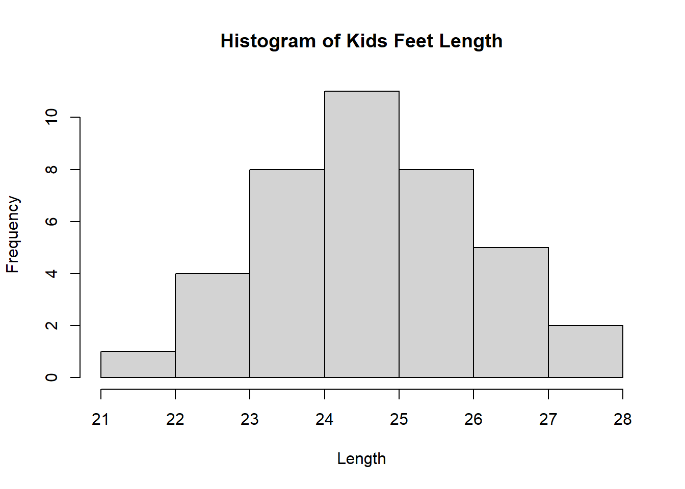
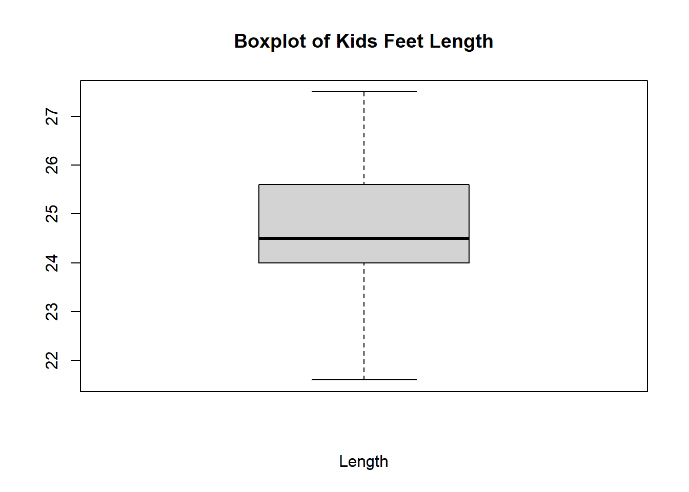
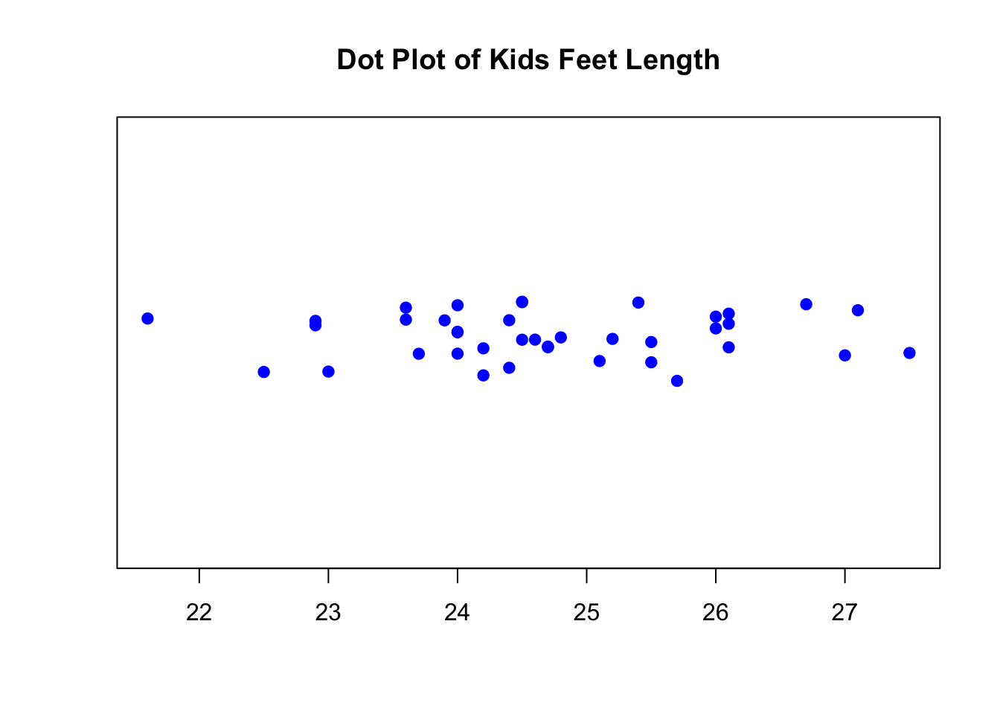
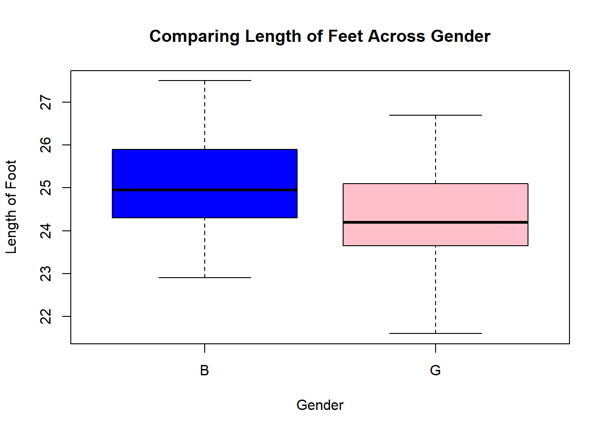
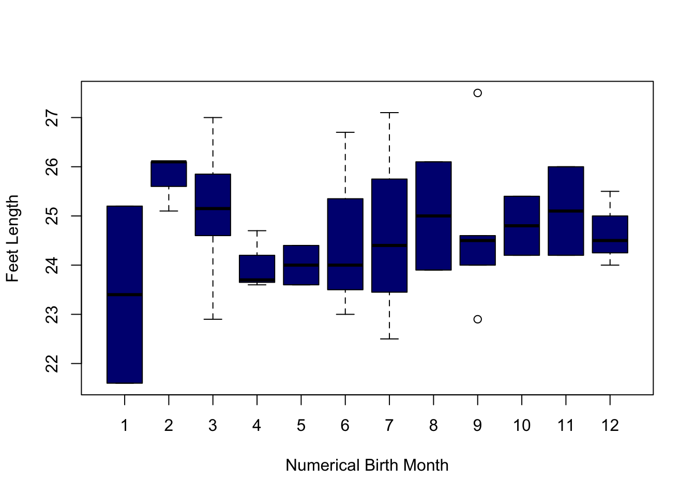
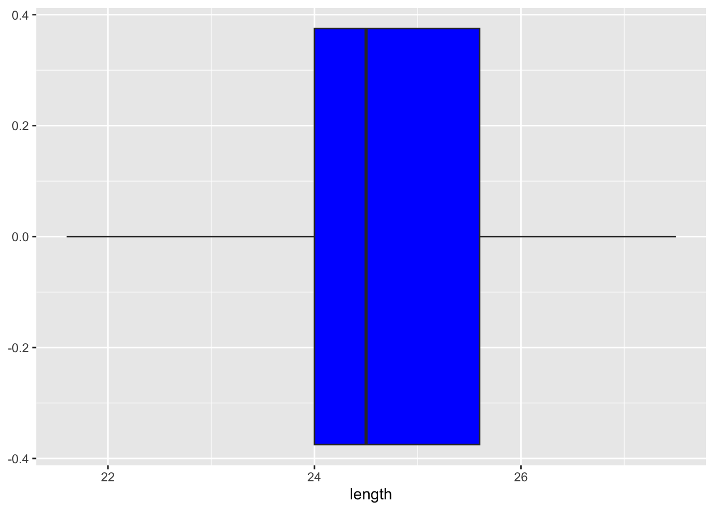
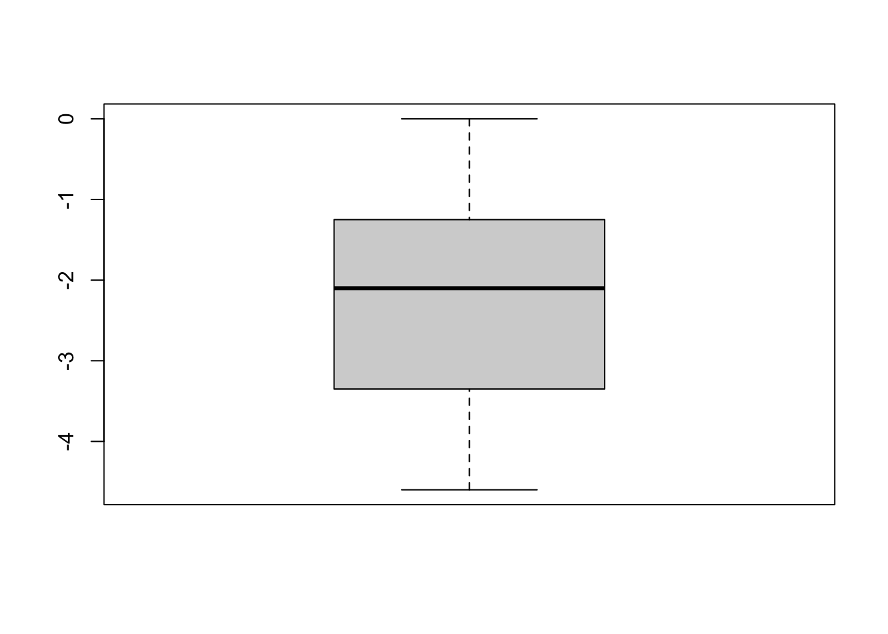
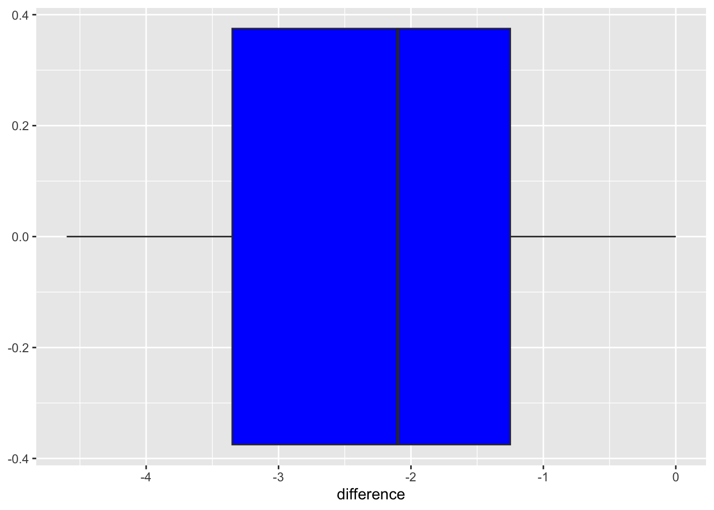

All Class Codes
Week 2 Day 1
Making Inference
Define Inference
Hypothesis Testing
Type I Error vs Type II Error – Examples (Flip flops vs medicine)
# Type I error: False positive (rejecting a true null hypothesis)
# Type II error: False negative (failing to reject a false null hypothesis)
# Example:
# Imagine a scenario where you are testing the effectiveness of a new medicine.
# - Null hypothesis (H0): The medicine has no effect.
# - Type I error: You conclude that the medicine is effective when it actually isn't.
# This can lead to unnecessary side effects and costs.
# - Type II error: You conclude that the medicine is not effective when it actually is.
# This means a useful treatment is rejected, possibly harming patients who need it.
# Another Example:
# Suppose you are testing if flip-flops are waterproof.
# - Null hypothesis (H0): Flip-flops are waterproof.
# - Type I error: You conclude that flip-flops are not waterproof when they actually are.
# - Type II error: You conclude that flip-flops are waterproof when they actually aren’t.Type I Error and Level of Significance
# Type I error = Level of significance = 1 – level of confidence
# The significance level (alpha) represents the probability of making a Type I error.
# Example: If the confidence level is 95%, then the significance level (alpha) is 0.05.
# This means there is a 5% chance of rejecting a true null hypothesis.Type II Errors and Power
Sufficient Evidence – Not Proof
# Hypothesis testing does not provide absolute proof but rather sufficient statistical evidence.
# - A statistically significant result suggests that an effect exists, but it does not confirm it with certainty.
# - External factors, assumptions, and sample limitations must be considered.
# - Scientific conclusions should be drawn cautiously based on the strength of the evidence.P-value Calculation
# P-value needs two things: a test statistic and a sampling distribution of the test statistic
# - The test statistic is calculated based on sample data (e.g., t-score, z-score, F-statistic).
# - The sampling distribution describes how the test statistic behaves under the null hypothesis.
# - The p-value measures how extreme the observed test statistic is, assuming the null hypothesis is true.
# - A small p-value suggests evidence against the null hypothesis, leading to potential rejection of H0.Peer Review Analysis
# 1) Go to the Analysis Menu and open Good Example Analysis
# 2) Summary of Student Peer Reviews for the Good Example Analysis
# 3) Identify at least one student who you would like feedback from
# 4) Identify at least one student that you would NOT like to give you feedback on future assignments.
# 5) Find an example of Good Specific Feedback
# To practice, locate at least one student feedback where the feedback
# is specific enough that if it were given to the wrong student
# that student wouldn't find it useful, but the right student would find it useful.
# 6) With Peers, identify things you should avoid doing
# 7) With Peers, identify principles that would make for a good critiqueData Exploration
Group 1 Analysis
Group 2 Analysis
Group 3 Analysis
Notes
Week 2 Day 2
Day 1
A) Take a few moments to knit your index.rmd file
B) Do the Good Graphics question in the quiz
Histograms (length)
Go through the four questions below for Question 3
Boxplots
Scatterplots
Go over the Stephanie analysis
Week 3
Day 1
A) Quantitative vs Categorical Data - KidsFeet
Min. 1st Qu. Median Mean 3rd Qu. Max.
21.60 24.00 24.50 24.72 25.60 27.50 # Quantitative Y | Categorical X (2 Groups) - length by sex
tapply(KidsFeet$length, KidsFeet$sex, summary)$B
Min. 1st Qu. Median Mean 3rd Qu. Max.
22.90 24.35 24.95 25.11 25.80 27.50
$G
Min. 1st Qu. Median Mean 3rd Qu. Max.
21.60 23.65 24.20 24.32 25.10 26.70 # Quantitative Y | Multiple Categorical X - length by sex and biggerfoot
tapply(KidsFeet$length, list(KidsFeet$sex, KidsFeet$biggerfoot), summary) L R
B summaryDefault,6 summaryDefault,6
G summaryDefault,6 summaryDefault,6[1] 0.6410961
Call:
lm(formula = length ~ width + sex, data = KidsFeet)
Coefficients:
(Intercept) width sexG
10.3609 1.6044 -0.1329 # Binomial Y | Quantitative X - sex and length - opposite x and y
glm(sex ~ length, data = KidsFeet, family = binomial)
Call: glm(formula = sex ~ length, family = binomial, data = KidsFeet)
Coefficients:
(Intercept) length
12.4860 -0.5074
Degrees of Freedom: 38 Total (i.e. Null); 37 Residual
Null Deviance: 54.04
Residual Deviance: 50.34 AIC: 54.34B - Summary Statistics
C - Visualization
# Histogram - quantitative
hist(KidsFeet$length, main="Histogram of Kids Feet Length", xlab="Length")
# Boxplot - quantitative
boxplot(KidsFeet$length, main="Boxplot of Kids Feet Length", xlab="Length")
# Dot plot - quantitative
stripchart(KidsFeet$length, method = "jitter", pch = 19, col = "blue", main = "Dot Plot of Kids Feet Length")
D - Answering Specific Questions
# What is the average length of feet in the KidsFeet dataset?
favstats(KidsFeet$length) %>% pander()| min | Q1 | median | Q3 | max | mean | sd | n | missing |
|---|---|---|---|---|---|---|---|---|
| 21.6 | 24 | 24.5 | 25.6 | 27.5 | 24.72 | 1.318 | 39 | 0 |
| sex | min | Q1 | median | Q3 | max | mean | sd | n | missing |
|---|---|---|---|---|---|---|---|---|---|
| B | 22.9 | 24.35 | 24.95 | 25.8 | 27.5 | 25.11 | 1.217 | 20 | 0 |
| G | 21.6 | 23.65 | 24.2 | 25.1 | 26.7 | 24.32 | 1.33 | 19 | 0 |
boxplot(length~sex, data=KidsFeet, main="Comparing Length of Feet Across Gender",
xlab="Gender", ylab="Length of Foot", col=c("blue","pink"))
# Are there certain months of the year associated with longer feet?
favstats(length~birthmonth, data=KidsFeet) %>% pander()| birthmonth | min | Q1 | median | Q3 | max | mean | sd | n | missing |
|---|---|---|---|---|---|---|---|---|---|
| 1 | 21.6 | 22.5 | 23.4 | 24.3 | 25.2 | 23.4 | 2.546 | 2 | 0 |
| 2 | 25.1 | 25.6 | 26.1 | 26.1 | 26.1 | 25.77 | 0.5774 | 3 | 0 |
| 3 | 22.9 | 24.65 | 25.15 | 25.77 | 27 | 25.14 | 1.218 | 8 | 0 |
| 4 | 23.6 | 23.65 | 23.7 | 24.2 | 24.7 | 24 | 0.6083 | 3 | 0 |
| 5 | 23.6 | 23.8 | 24 | 24.2 | 24.4 | 24 | 0.5657 | 2 | 0 |
| 6 | 23 | 23.75 | 24 | 24.68 | 26.7 | 24.43 | 1.588 | 4 | 0 |
| 7 | 22.5 | 23.45 | 24.4 | 25.75 | 27.1 | 24.67 | 2.312 | 3 | 0 |
| 8 | 23.9 | 24.45 | 25 | 25.55 | 26.1 | 25 | 1.556 | 2 | 0 |
| 9 | 22.9 | 24 | 24.5 | 24.6 | 27.5 | 24.7 | 1.704 | 5 | 0 |
| 10 | 24.2 | 24.5 | 24.8 | 25.1 | 25.4 | 24.8 | 0.8485 | 2 | 0 |
| 11 | 24.2 | 24.65 | 25.1 | 25.55 | 26 | 25.1 | 1.273 | 2 | 0 |
| 12 | 24 | 24.25 | 24.5 | 25 | 25.5 | 24.67 | 0.7638 | 3 | 0 |
boxplot(length~birthmonth, data=KidsFeet, col="navy",
xlab = "Numerical Birth Month", ylab="Feet Length")
[1] 0.6410961plot(length~width, data=KidsFeet, main="Relationship Between Length and Width of Kids Feet",
xlab="Width of Foot", ylab = "Length of Foot")
Week 4 Day 1
Making Inference
Define Inference
Hypothesis Testing
Parametric Distributions
Parametric vs Non-Parametric Methods
Example of a t-Test
# Conducting a one-sample t-test
t.test(KidsFeet$length, mu=25.1, alternative="two.sided", conf.level=0.95)
One Sample t-test
data: KidsFeet$length
t = -1.7865, df = 38, p-value = 0.082
alternative hypothesis: true mean is not equal to 25.1
95 percent confidence interval:
24.29597 25.15019
sample estimates:
mean of x
24.72308 | Test statistic | df | P value | Alternative hypothesis | mean of x |
|---|---|---|---|---|
| -1.787 | 38 | 0.041 * | less | 24.72 |
Two-Sample t-Test
Welch Two Sample t-test
data: length by sex
t = 1.9174, df = 36.275, p-value = 0.03154
alternative hypothesis: true difference in means between group B and group G is greater than 0
95 percent confidence interval:
0.09382502 Inf
sample estimates:
mean in group B mean in group G
25.10500 24.32105 Making Inference
Define Inference
Hypothesis Testing
Parametric Distributions
Parametric vs Non-Parametric Methods
Example of a One-Sample t-Test
| Test statistic | df | P value | Alternative hypothesis | mean of x |
|---|---|---|---|---|
| -15.53 | 38 | 4.806e-18 * * * | two.sided | 24.72 |
Example of a Paired t-Test
t.test(KidsFeet3$length, KidsFeet3$width3, mu=0, paired=TRUE,
alternative="two.sided", conf.level=0.95)
Paired t-test
data: KidsFeet3$length and KidsFeet3$width3
t = -11.529, df = 38, p-value = 5.668e-14
alternative hypothesis: true mean difference is not equal to 0
95 percent confidence interval:
-2.649596 -1.858096
sample estimates:
mean difference
-2.253846 Example of an Independent Samples t-Test
Welch Two Sample t-test
data: length by sex
t = 1.9174, df = 36.275, p-value = 0.06308
alternative hypothesis: true difference in means between group B and group G is not equal to 0
95 percent confidence interval:
-0.04502067 1.61291541
sample estimates:
mean in group B mean in group G
25.10500 24.32105 Checking Requirements

Graphics



Numerical Summaries
| min | Q1 | median | Q3 | max | mean | sd | n | missing |
|---|---|---|---|---|---|---|---|---|
| 21.6 | 24 | 24.5 | 25.6 | 27.5 | 24.72 | 1.318 | 39 | 0 |
| min | Q1 | median | Q3 | max | mean | sd | n | missing |
|---|---|---|---|---|---|---|---|---|
| -4.6 | -3.35 | -2.1 | -1.25 | -3.553e-15 | -2.254 | 1.221 | 39 | 0 |